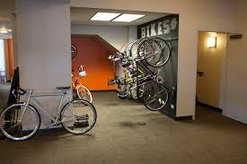

What They Do, It Do What It Do and Be What It Be
Archer Malmo is a company for computer geeks where they work with random clients on websites.
Archer Malmo is a company for computer geeks where they work with random clients on websites.
To me, Archer Malmo is a very good place for web designers who want to enhance their skills with programming languages. The place is very big, having multiple levels, and had a neat cotton museum at the entrance. The bus trip to the Archer Malmo place was not too long, hwever it was quite nippy, as if Frozone from the Incredibles got extremely upset and turned into a menacing super villain because his hero paychecks weren't paying all the bills. When we left Archer Malmo to go to the food place to get lunch, the bus took a minute to pick us up. I don't know why the bus driver left we weren't gone for too long, people are just impatient in 2018 almost 2019. But anyways enough about the bus situation; The fellow who introduced to Archer Malmo was very chill, and he has worked there for a good amount of time. He seems to know a lot about coding and making apps, and seems to have a passion for his career.
The logo of Archer Malmo is all capital letters, bold with an unkown font to me, and there is a triangle reminiscent of the YouTube logo except this one is orange and has curved edges. Very simplistic but says a lot about the company itself
the inside of Archer Malmo was more relaxed than your average business. There was a typical table with chairs around it, but they had a whole sofa and a whole ping pong table for when workers get bored of doing work.
Archer Malmo owns a bike area where people can ride their bikes down the elevator and down the stairs if the elevators are broken down for the day. But for real I don't know how or why they have bikes in their room, you can't ride them in the building because that is very stupid and dumb. Maybe the workers need a form of physical activity because they are sitting down for a long period of time and need some time away from their computers and just live a little bit
Yes indeed, If I felt like going to college to get a degree so that could help land a job, this would be a little starter job for me until I move on to bigger and better things in life. All in all I think Archer Malmo is quite a fun place to learn about what computers and people can do with the age of technology we live in.
My visit to Archer Malmo was honestly quite fun, there weren't too many inconveniences, and the people there seem to have fun at their job. Overall a 10/10 experience, I would like to do anotheer field trip this year if it is at all possible. The lunch afterwards was also very good, they had some great burgers.